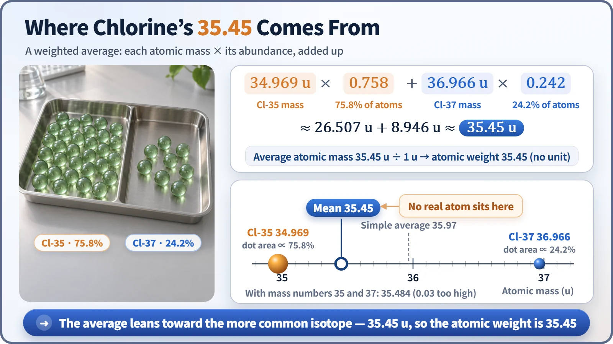
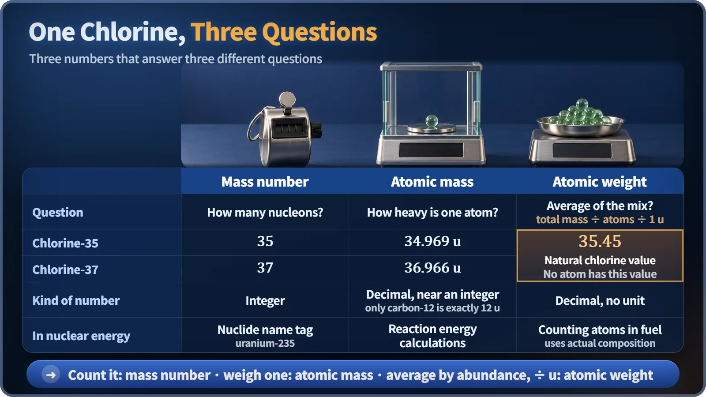

Nuclear & Radiation Basics · 006
No Class Ever Earned a 3.75 — Why Atomic Weight and Mass Number Are Different
Like a GPA that matches no single class, chlorine's 35.45 is a weighted average that matches no single atom.
The mass number counts nucleons and is always a whole number; the atomic mass is what one atom actually weighs; the atomic weight on the periodic table is the abundance-weighted average of an element's isotopes. That is why chlorine is listed as 35.45 even though no chlorine atom weighs 35.45 u. [1]
Let's start with a report card
Say you got a 4.0 in a 3-credit class and a 3.0 in a 1-credit class. Your GPA isn't the midpoint, 3.5; it tilts toward the class with more credits: (4.0 × 3 + 3.0 × 1) ÷ 4 = 3.75. That is a weighted average. And nowhere on the report card is there a class graded 3.75. The number represents the whole report card, not any class that exists.
Chlorine's 35.45 on the periodic table is exactly that kind of number. There isn't a single chlorine atom on Earth that weighs 35.45 u.
Three numbers, three questions
"How many pieces is it made of?" That is the mass number, the count of protons and neutrons (nucleons) in the nucleus. Chlorine has 17 protons; with 18 neutrons it has mass number 35, with 20 neutrons, 37. As a count, it is always a whole number.
"How heavy is that one atom?" That is the atomic mass, measured in the unified atomic mass unit u, defined as exactly one-twelfth of the mass of a carbon-12 atom (about 1.66×10⁻²⁷ kg). Chlorine-35 weighs 34.969 u and chlorine-37 36.966 u. [2]
"How heavy is a handful of natural chlorine, on average?" That is the atomic weight, the number printed on the periodic table.
It has 35 nucleons, so why 34.969?
First, a proton or neutron doesn't weigh exactly 1 u; they come in at about 1.007 u and 1.009 u. Second, when nucleons bind, a little mass disappears, equal to the binding energy: the mass defect. Together these make atomic masses drift slightly from whole numbers. Only carbon-12 is exactly 12 u, by definition. Hydrogen-1 weighs 1.0078 u and uranium-238 238.051 u. The drift is usually less than 1 u, so the mass number is like a rounded-off nickname for the atomic mass: close, but a different number.
Here's how 35.45 is made
Of every 100 chlorine atoms in nature, about 75.8 are chlorine-35 and about 24.2 are chlorine-37; that share is the abundance. Put the abundance where the credits went and the atomic mass where the grade went:
34.969 × 0.758 + 36.966 × 0.242 ≈ 26.507 + 8.946 ≈ 35.45

The average leans toward 35 rather than sitting at 36 because there is about three times as much chlorine-35, just as the 3-credit class pulls the GPA its way. Plug in the mass numbers 35 and 37 and you get 35.484, about 0.03 off, which is not negligible in precise work. The atomic weight is a relative value with no unit, but it matches the molar mass: one mole of chlorine atoms weighs about 35.45 g. [3]
Three easy places to get confused
"Isn't atomic weight just the mass number?" No. The mass number is the nucleon count of one kind of atom; the atomic weight is an average over a mix of isotopes.
"Aren't the decimals measurement error?" No. The main reason is the isotope mix; atomic masses not being whole numbers also plays a part.
"Atomic weight never changes, right?" Isotope proportions vary slightly with where a sample comes from, so chlorine's atomic weight is published as a range, 35.446 to 35.457. Even carbon contains about 1.1% carbon-13, so its atomic weight is 12.011, not 12.
In nuclear energy, you pick the right one of the three
The name tag on a nuclide, as in uranium-235, is the mass number. Fission energy calculations use each nuclide's atomic mass to many decimal places, because the mass that disappears is so tiny that an average or a whole number gives a nonsense answer. Counting atoms in a fuel uses the average for that fuel's actual isotope makeup: natural uranium's atomic weight is 238.03, while uranium enriched to 4.5% by weight comes to about 237.91. [4]

| Mass number | Atomic mass | Atomic weight | |
|---|---|---|---|
| Chlorine-35 | 35 | 34.969 u | 35.45 (natural chlorine) |
| Chlorine-37 | 37 | 36.966 u | |
| Kind of number | integer | decimal, near an integer | decimal, no unit |
| In nuclear energy | nuclide name tag | reaction energy | atoms in fuel |
Key takeaways
The mass number is a whole number from counting nucleons, the atomic mass is a decimal from weighing one atom, and the atomic weight is the average of the isotopes mixed together in nature. The 35.45 on the periodic table is neither a typo nor an error; it is the GPA on chlorine's report card.